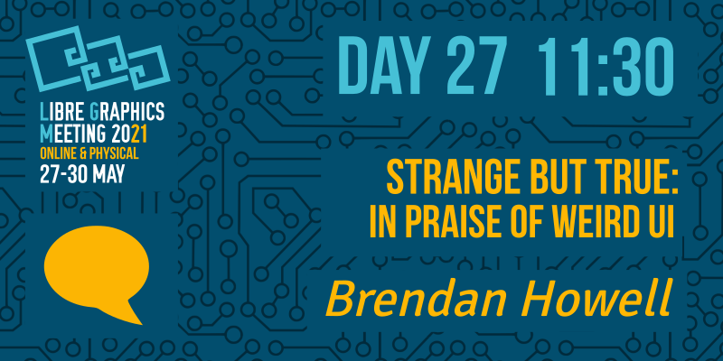

One common criticism of FLOSS software is that it does not conform to standard notions of UI/UX. These standards have been set by large corporate players in the software world. While some of these critiques are arguably quite valid in specific cases, there's also an argument to be made that one of the great strengths of FLOSS is the capacity to allow and enable diversity in ways and methods of interaction. This presentation will try to make the case for a more diverse, inclusive interface culture.
Current interface culture is dominated by a few large corporate players: google/Alphabet, Apple, Microsoft. For many of us who spend countless hours working, socializing and amusing ourselves while using technical media, these powerful players have a huge influence on our experience of everyday life.
Our perception of the world around us and how we see ourselves in, it is mediated by the decisions of a few privileged managers, programmers and designers, mostly male and white on the west coast of the United States.
To suggest any other way of living in a networked society is to risk being perceived as blasphemous, uncool, out-of-touch, escapist or simply absurd. These interfaces have become so embedded in our conception of reality that we now have a crisis of the imagination, where it is difficult to even think of anything different.
FLOSS applications are by no means perfect but they might show us some possible methods for a more intersectional idea of interface culture.